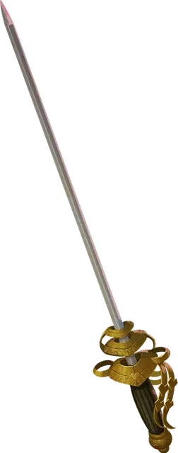

Жестокое оружие
Vicious Weapon
Оружие (любое Простое или Воинское), редкое

Рекомендованная стоимость 4 000 ЗМ
Когда это магическое оружие попадает по существу, оно наносит 2к6 дополнительного урона того же типа, что и обычный урон этого оружия.